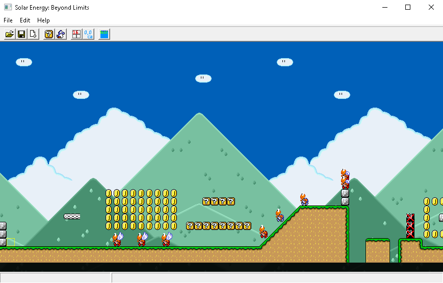
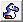
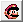

How to make levels/content for JFK mario world
Advice
So you want to create your own levels for the game, or maybe test some stuff? Report bugs? Here's a guide on how you can do it.
Note, I really suggest creating a new modpack for creating your levels and content. Documentation on it can be found here:
Pack Format
How to actually make levels
You can use the editor tool that comes with the game, Solar Energy. It's not a 100% stable editor, but it should definitely do the job. Let's explain some things.

Solar Energy: Beyond Limits (The Level Editor)
Table of contents :
1) How to use
2) Controls
3) Custom content
How to use (Buttons)
Open File, use this to open a level .txt file and edit it.
Save file, only works when a file is open (lol who could of thought).
Create a new level, it will ask you to input various things, such as size, ID, etc..
Map16 Tile Picker, if you click on anything in here, you can later rightclick in the level to place that tile down (and resize, etc)
 Sprite Picker, if you click on anything in here, works similarly to the map16 picker, you can rightclick in the level to place it down.
 Edit level parameters/config, allows you to change things like what music should be playing, etc.
Reset camera to level origin.
Sprite 16x16 snap, You can freely move sprites around if this is disabled, if this is enabled, they snap to a 16x16 grid.
Test the level, this will quickstart JFKMW and put you into the level.
Controls
Arrow keys - Move camera around.
Left mouse button - Multi use, you can use this to select sprites or level parts, then resize/drag them around.
Left mouse button down (holding) - If holding a sprite, then you'll move the sprite until you let go of the left mouse button.
Right mouse button - Spawn/clone a sprite or level part, depending on what you've selected.
Middle mouse button (scroll wheel) - Set level player start position
Delete Key - Delete selected object.
Control + Scroll Wheel - Resize view.